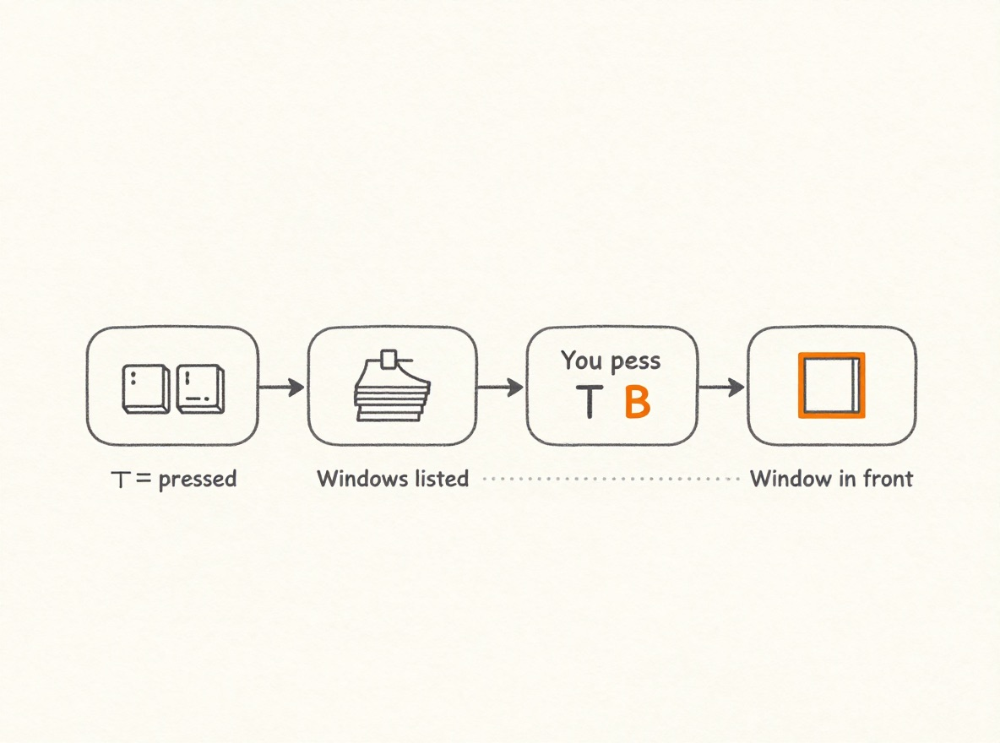

Know the key. Skip the looking.
The built-in switcher asks you to cycle, look, and cycle again. A key you already know takes no looking at all. That's the whole idea behind Window Switcher.
Pressing beats searching.
Tapping ⇥ until the right icon lights up means watching the screen and reacting. Pressing T B is one movement your hands make without reading anything.
Keys your hands learn.
⌘⇥ reorders apps every time you switch. Window Switcher's keys stay with their apps, and window letters stay in the order windows opened. Things that don't move become habits.
Every desktop, one list.
Windows on other desktops and in full-screen apps get keys too. You don't have to remember where you left something, only what it is.
A short, complete list.
Window Switcher does nothing until you press its shortcut. Then it does this, and goes back to doing nothing.
- macOS tells it the shortcut was pressed. It's a standard hotkey registered with macOS. Window Switcher doesn't watch your keyboard.
- It asks macOS for your windows. Through Accessibility, the permission macOS uses for apps that work with other apps' windows.
- It shows the switcher. The keys you type go to the switcher itself, and only while it's open.
- It brings your choice forward, switching desktops if it needs to, and closes.
If it's not on this list, it doesn't happen.

AI draft · replaceNothing. Really.
Window Switcher doesn't have an account, an analytics service or a server of ours to talk to.
- No analytics. We don't know how often you switch, or to what.
- No crash reports sent to us. macOS keeps its own crash logs on your Mac, as it does for every app.
- No account. Download it, open it, press ⌥⇥.
- One network request: the update check. Once a day it asks GitHub whether there's a newer version. You can turn it off in Settings → Updates.
- Your settings stay on your Mac, in Window Switcher's own preferences.
Small, and made for the Mac.
Written in Swift with Apple's own frameworks. One universal app for Apple silicon and Intel Macs, signed and notarized by Apple.
Never installs anything by itself.
When there's a new version, Window Switcher tells you and opens the download in your browser. You replace the app when it suits you. Your keys and settings are kept.
About permissions and trust.
Why does it need Accessibility?
To list windows and bring a particular one forward. Without it, Window Switcher still opens and switches between apps; it just can't show their windows.
Does it need Input Monitoring or Screen Recording?
No. Opening the switcher, even with ⌘⇥, needs no permission at all. It never reads what's on your screen, so there are no thumbnails, just window titles.
Does it see what I type?
Only the keys you press while the switcher is open, and only to pick what to switch to. It never records keystrokes.
Does it work while a password field is focused?
Yes. Some apps turn on Secure Input while a password field is focused, which stops apps that watch the keyboard. Window Switcher's shortcut is a standard macOS hotkey, so it keeps working.
Can my company check what it does?
It's signed with a Developer ID and notarized by Apple, and the only permission it asks for is Accessibility, which shows in System Settings → Privacy & Security. Its one network request is to GitHub's public releases API.
Press ⌥⇥. Then the next key you want.
Free for the Mac. No account, nothing running in the background, and every app has a key the moment it's installed.
Download Window Switcher for Mac